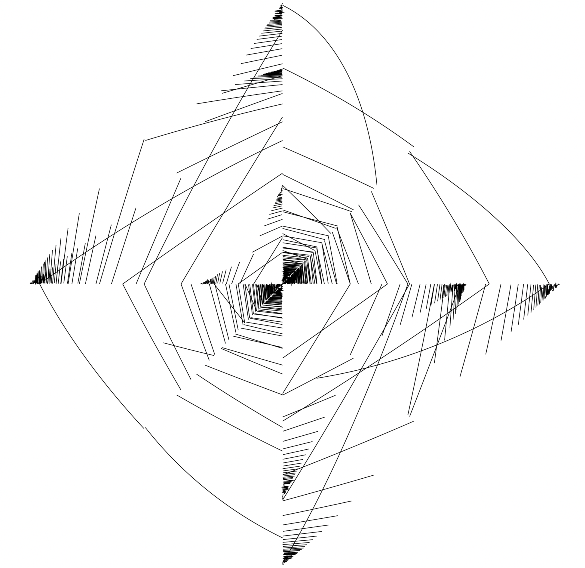
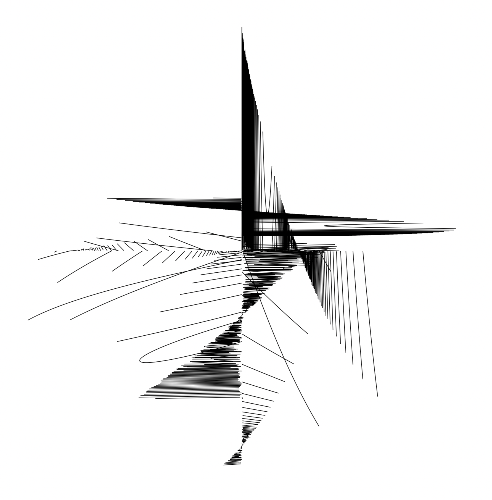
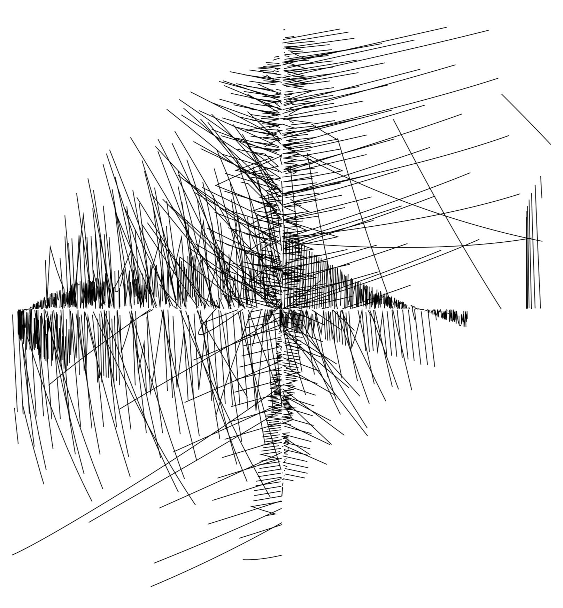
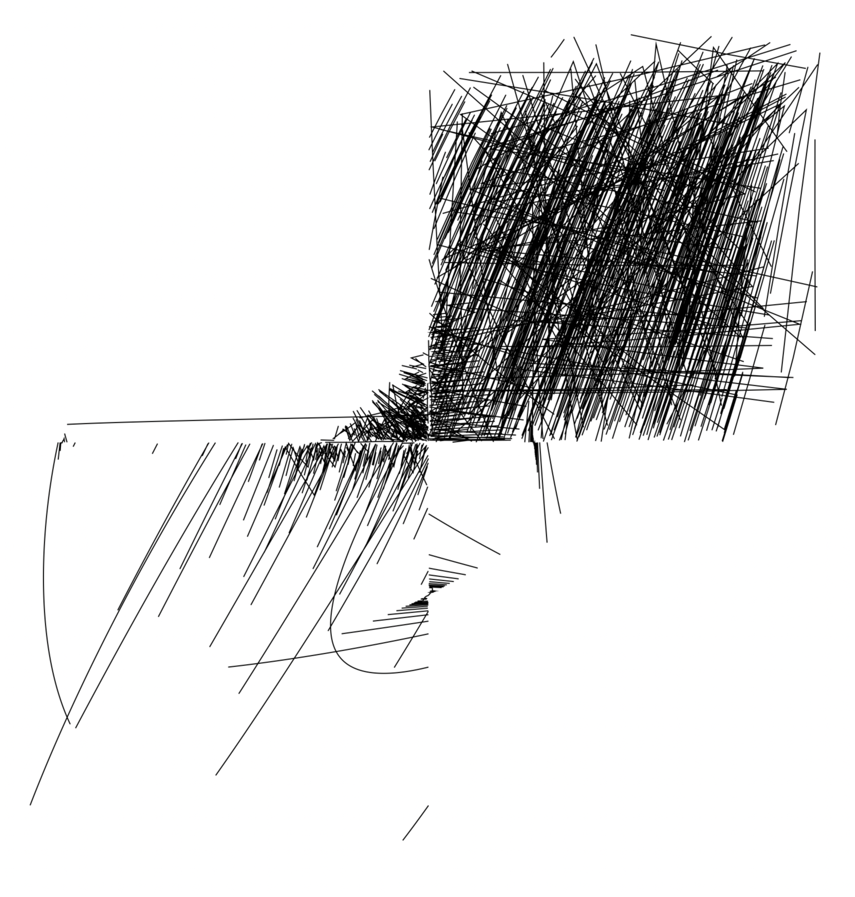
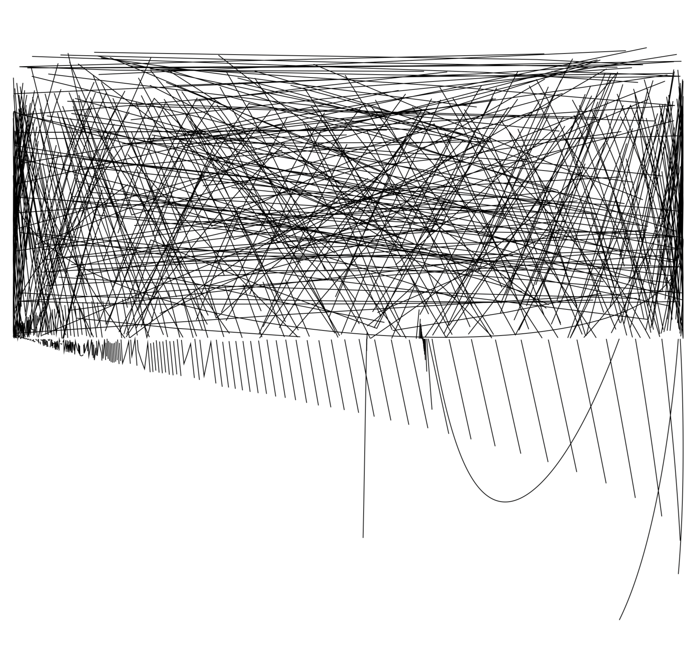
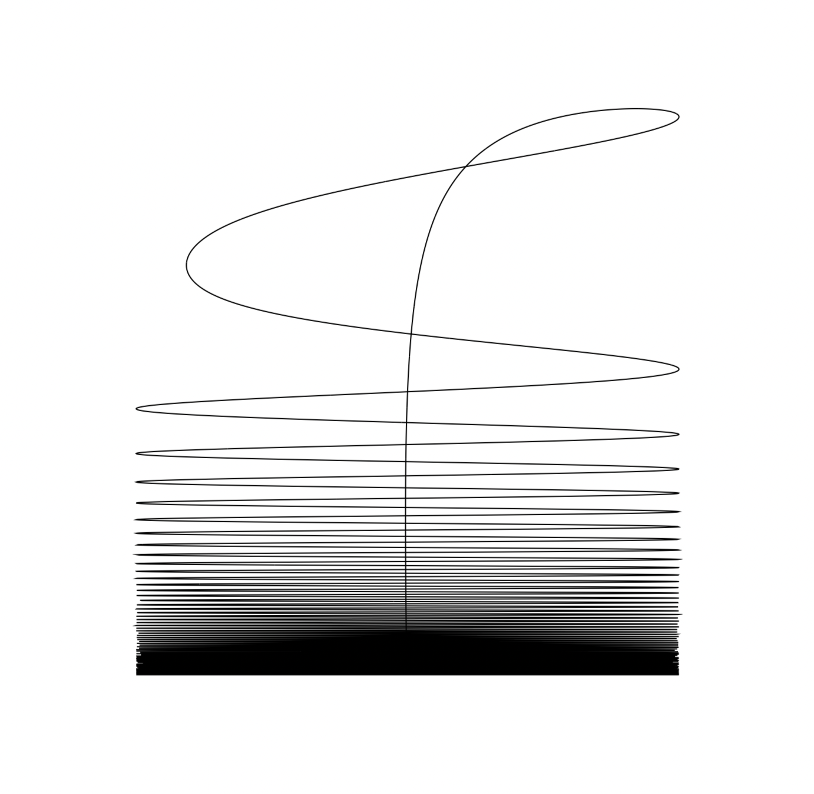

Early concept
[xy]=[sin(πt)%cos(et)cos(et)%sin(πt)],t=−e…π

[xy]=[sin(te%sin(πt))sin(t−e%cos(et))],t=−e…π

[xy]=[sin(te%cos(πt))sin(tπ%cos(et))],t=−e…π

[xy]=[sin(t−e%cos(πt))sin(t−π%cos(et))],t=−e…π

[xy]=[sin(t−e)sin(t−π%cos(et))],t=−e…π

[xy]=[sin(cost(et)et)cos(t)],t=−e…π
